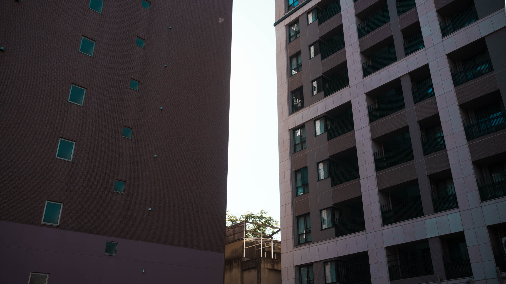

ブログ、、、辞めますわ。（釣りサムネ）
2024/11/21
結論：自分に合ってない
ブログ辞めるとは言ったけど辞めるつもりはないです（即矛盾）。
辞めるって言うより今までみたいな文章文章した路線は違うかな～みたいなくらいです。
いっつもブログ読み返すと「ここ読みづらいな～」とか「ここの展開もうちょっと考えられるなぁ」みたいに改善点も見つかるし方法も分かるけど色々リソース割いてまでやることじゃないなぁとか思って、結局読みづらいまんまになるってのばっかだった気がしたので。
ってことでもっとゆるゆるつぶやきブログぐらいにしよう！と思った今日この頃。 そもそもブログって本来そういうものだったよな～とかですかねぇ。
あとこれ大余談なんですが、なんか漠然と小説家と結婚したいという夢が１回生の頃からありました。 きっと文才が無さ過ぎて憧れてたんでしょうね。以上！毎回これくらいのカスカス感とか、なんなら写真とか載せていく方がいいかな～って感じです！！！